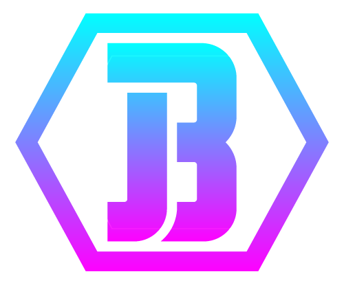

Hey there! I'm Joel Beckum, software developer and professional computer nerd!
I am a student in the Nashville Software School full-stack development program, and I have worked extensively to develop my understanding of the theory and application of strongly-typed software languages. I am looking to apply these object-oriented programming skills in a challenging and varied work environment. I seek to become a valuable member of a software development team that will push me to advance both the software resources of prospective employers and my own expertise.
Portfolio
Here are some of the projects I've completed both on my own and while attending Nashville Software School.
About Me

When I received my BA in Spanish Studies from Valdosta State University, I had aspirations of teaching English to migrant children and sharing my love of language. While I tutored both children and adults in Spanish and French, it was a particularly bad time to be exploring education careers in Georgia, and, rather than succumbing to the waves of furloughs and program cuts, I elected to explore other opportunities. And explore I did! I spent some years as a veterinary technician, teaching myself how to run the laboratory tests to better serve the doctors and, as a result, becoming a trusted right hand both in the lab and the surgery suite. After volunteering with school groups in national parks, I found a wonderful new chance to explore, and I became a conservationist for the National Park Service, caring for the relics and resources of Fort Frederica National Monument, putting together invasive plant control programs, and leading the Youth Conservation Corps through their own explorations of all that our parks have to offer. When the park budgets were slashed and the hiring freezes began, I remained undaunted - I had faced this kind of challenge before, and I knew it was simply a chance to find a new opportunity.
To my surprise and delight, that opportunity came in the form of a new kind of language - software language. I was instantly hooked - all of my exploration, my hunger to find new things to learn, culminated in this discovery. I immediately sought resources to teach myself computer programming. After learning the basics of coding with the free JavaScript resources I could find, I enrolled in Tim Buchalka's Java masterclass, seeking to strengthen my foundational learning with a stricter language. I became an IT technician for Advyon to round out my technology experience. And finally, I enrolled in Nashville Software School. Here I found the program that would give me the remaining tools I needed to realize what I was meant to be - a software developer.